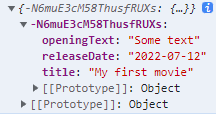

fetch in React
這章節將透過原生 JavaScript 最簡單的方式 - fetch 在 React 專案中送出 request，並 handle API 所回傳錯誤訊息
fetch
首先，如果是透過 fetch 送出 request，第一個參數就是 API url，第二個參數則是 header 相關參數，如果沒有特別設定 header，預設就會送出 GET method
1 | const App = () => { |
而 fetch 本身是一個 async Promise，所以我們可以透過 then 接收回傳內容，而如果格式為 json，需要透過 response.json() 取得回傳資料，一個最簡單取得 GET request 的方式就完成了
1 | const fetchMoviesHandler = () => { |
Using async/await
既然 fetch 是一個 async Promise，就可以透過原生 async/await 來改寫
1 | const fetchMoviesHandler = async () => { |
Handing Loading & Data States
在實際的情況。透過 HTTP request 取得資料時，會因為網路速度或後端 Server 運作等因素，造成在資料取得的過程中，會有一段時間不等的空檔，在 UI 加上 loading 狀態是提升 UX 的常見作法之一。
在 React 中，一個最單純的方式就是透過一個 State 來管理 loading 狀態，並在送出 HTTP request 時，開啟狀態，並在收到 response 時，無論結果為何，一併關閉狀態
1 | const [loading, setLoading] = useState(false); |
Handling Http Errors
在送出 Http reqeust 後，可能因為參數錯誤等問題，Http response 會回傳 status code 4XX 或 5XX 來表示這類型的錯誤，而特別要注意的是，有回傳這類型的錯誤代表 Http request 還是有正常送出，並成功取得回饋
而在 fetch API 中，發生這種情況不會回傳於 promise reject，而是同樣回傳於 resolve，只是會將 response.ok 設為 false，所以無法透過串接 catch 取得這個錯誤，如果我們希望在接受到這個錯誤後，拋出對應的錯誤訊息於 UI 上以讓使用者辨別當下狀態，可以透過 try catch 方式包覆這段程式碼，並在 response.ok 為 false 的情況下，使用 new Error 建立對應訊息於 catch 中接收
1 | const [error, setError] = useState(null); |
Using useEffect() For Requests
在實際的應用中，其實不會等到使用者觸發點擊的行為才會送出 request 來取得資料，通常是在使用者一進到這個頁面就自動為它取得對應的資料，這時候就可以透過 useEffect()，而如果 dependency array 為空，就只有 component 第一次 render 時會觸發
1 | const fetchMoviesHandler = () => { |
但有時候會因為其他的狀態條件而使的我們必續持續監聽 dependency 來確保持續取得對應的資料，這時候就要把其中對應的 State 或 function 加到 dependency array 之中
1 | useEffect(() => { |
但如果只要做到這一步，就會造成每次 component re-render 都會觸發，所以需要在該 funciton 建立時，透過 useCallback() 來避免不必要的 invoke
1 | const fetchMoviesHandler = useCallback(async () => { |
Sending a POST Request
為了單純學習 React，但又希望可以實際串接 API 模擬真實開發狀況，可以使用一個 Google 的服務 - firebase，這個服務可以很簡單的透過 Google 帳號註冊並免費使用 ; 註冊後，可以直接新增專案，而 firebase 提供 2 種資料庫選擇，如果是簡單的應用，可以直接使用 Realtime Database，反之則可使用 Firestore Database。
於 firebase 中新增專案後，每個專案都會提供一個網址，這就是 API 執行的目標對象 ; 同樣地，也可以透過原生語法 fetch 來串接，這次的範例希望透過 POST 動態新增資料，並透過 GET 取得資料庫中的資料。
firebase API 可以自行在它提供的網址後方加上名稱，就會自動建立在資料庫中，而 fetch 第二個參數可以提入 http 格式，前面的範例因為是使用預設的 GET 所以可以忽略不填，這次則是要將 method 改為 POST，body 則是要送出的資料，但要轉成 JSON 格式
1 | const addMovieHandler = async (movie) => { |
送出 request 後，會得到一組亂數產生的 ID key，value 則為我們送出的資料

而取得的方式，可以將上方 GET 得範例網址改為與 POST 相同，即可得到對應的資料
資料參考
React - The Complete Guide (Incl Hooks, React Router, Redux)
Using Fetch
Firebase